一、设计目标
对于断路器开关柜类产品，器件和铜排运行大电流，发热量巨大，器件工作温度高，需通过热仿真进行评估，并基于仿真结果优化设计方案，保证产品设计及运行可靠性。
断路器柜外部环境温度为+45℃，采用强制风冷散热方案，保证柜内空气平均温度不超过+55℃，实际运行环境有可能出现异常高温现象，故在设计时需要控制柜内温度留有一定的设计余量以应对异常高温现象。
二、热仿真边界条件
断路器柜热设计边界条件，尺寸、发热功率、温度等参数，如下表所示：
表1 断路器柜热设计边界
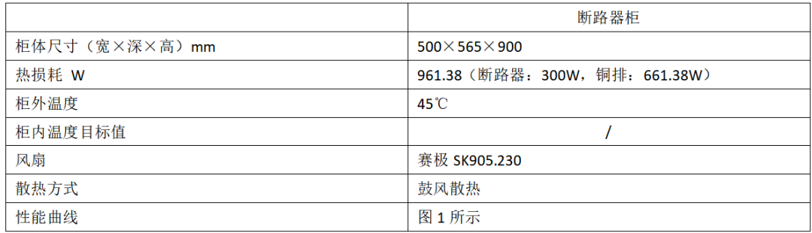
散热风扇，PQ曲线如下：
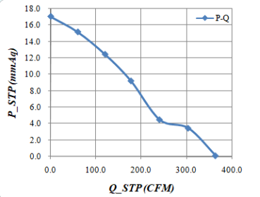
三、强制风冷机柜热设计
3.1 风机选型
根据电气输入柜内总损耗961.38W，环境温度45℃，出口空气温升不超过5℃，则理论计算总风量需求≮577m³/h。通过系统风扇鼓风的方式，将机柜内产生的热量转移至机柜之外，系统风扇、出风口位置如图1所示。其中，出风口共有3个，其余两个分别位于图示出口的背面和底面。断路器柜内散热路径如图2所示。
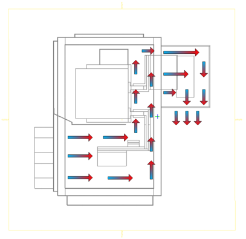
图2 机柜内空气流动方向
3.2 强制风冷散热仿真
根据仿真结果，确定系统风扇的工作点为：风量666m3/h，工作压损160Pa。断路器柜内空气流动轨迹仿真结果如图3所示。增加挡风板后，气流组织在断路器柜内无流动死角。
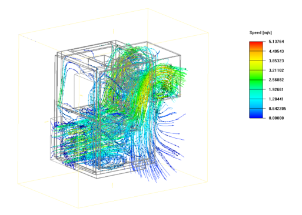
图3 断路器柜内空气流动轨迹
Z-1、Z-2两个截面上（截面位置如图4所示），空气流动轨迹如图5-8所示。
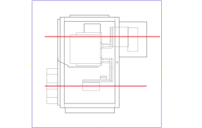
图4 Z-1、Z-2截面位置示意图
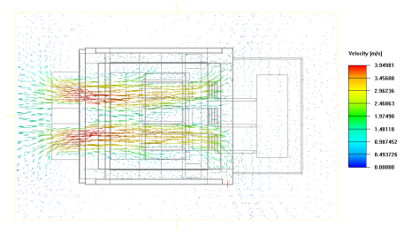
图5 Z-1截面上空气流动轨迹
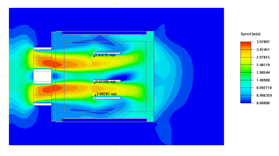
图6 Z-1截面上空气速度云图
| | |---|
| |
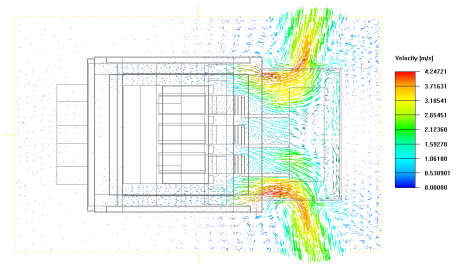
图7 Z-2截面上空气流动轨迹
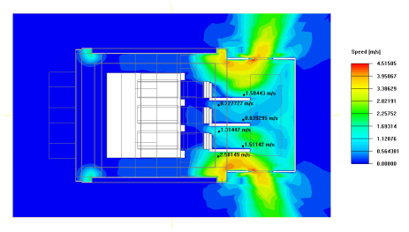
图8 Z-2截面上空气速度云图
铜排温度云图如图9所示。其中，铜排表面最高温度为92.7℃。
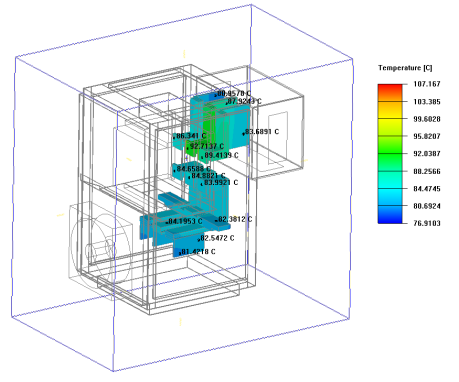
图9 排温度云图
X-1、Y-1截面上（截面位置如图10、图12所示），元件的温度云图如图11、图13所示。其中，在此截面上铜排内部的最高温度为92.4℃。
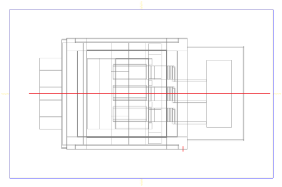
图10 X-1截面位置示意图
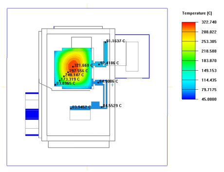
图11 X-1截面上，断路器、铜排温度云图
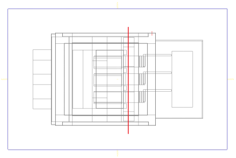
图12 Y-1截面位置示意图
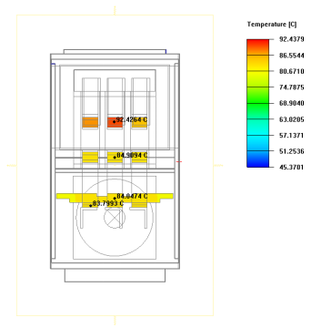
图13Y-1截面上，铜排温度云图
断路器柜三个排风口空气温度云图如图12-14所示。出口空气最低温度为46.8℃，最高温度为50.1℃。
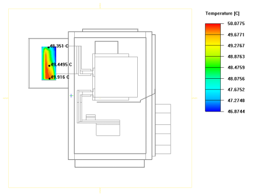
图12 百叶窗出风口-1空气温度云图
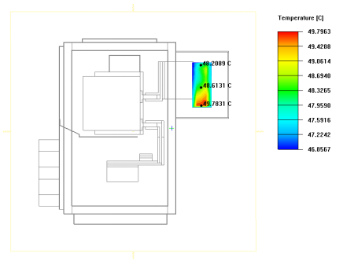
图13 百叶窗出风口-2空气温度云图
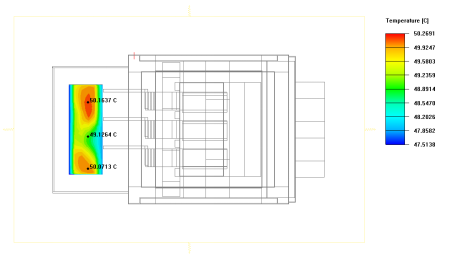
图14 钣金百叶窗出风口空气温度云图
4 结论
根据上述仿真结果，可得出如下结论：
a. 柜内空气流动无死角，整机流速分配合理；
b. 柜外环温为45℃时，出风口平均温度为48.9℃，温升3.9℃，满足温升的设计要求；
c. 铜排内部最高温度为92.4℃，满足不高于105℃的设计要求。
综上，此散热方案能够满足断路器柜的散热需求。
----------------------------END--------------------------------------
声明：欢迎分享，请在评论区探讨交流，指正错误，并分享经验。本文为作者原创，著作权归作者所有。未经授权，禁止以任何形式转载或复制。